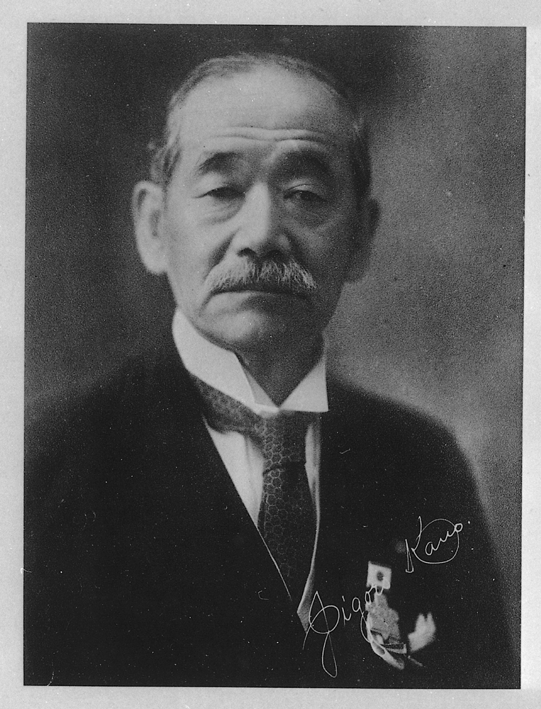

L'histoire du Judo
La voie de la souplesse : des arts martiaux samouraïs à l'un des sports de combat les plus pratiqués au monde.
La naissance du judo
Le judo a été créé au Japon en 1882 par Jigoro Kano. À l'origine, Kano pratiquait le jujitsu, un art martial utilisé par les samouraïs sur les champs de bataille. Cependant, il trouvait que de nombreuses techniques de cet art étaient trop dangereuses pour être pratiquées en toute sécurité dans un cadre éducatif.
Il décida alors de retirer les coups et les techniques mortelles pour concevoir une nouvelle discipline alliant le développement physique, mental et moral. Le terme Judo signifie littéralement "la voie de la souplesse" (Ju = souplesse, Do = la voie).
« Le judo est l'élévation d'une simple technique à un principe de vivre. »

Jigoro Kano
1860 — 1938
Créateur du judo et premier membre asiatique du Comité International Olympique (CIO).
Une évolution mondiale
Les grandes dates qui ont marqué l'histoire du judo, de sa création à son expansion internationale.
La fondation du Kodokan
Jigoro Kano fonde le Kodokan (l'école pour l'étude de la voie) à Tokyo avec seulement 9 élèves et un petit dojo de 12 tatamis. C'est la naissance officielle du judo moderne.
L'arrivée en Europe
Jigoro Kano voyage en Europe pour présenter sa discipline. Le judo commence à s'exporter et suscite rapidement la curiosité, notamment en France, qui deviendra une grande nation de ce sport.
Fédération Internationale
Création de la Fédération Internationale de Judo (FIJ). Le judo se structure véritablement au niveau mondial, avec l'harmonisation des règles d'arbitrage et la standardisation des grades.
Premiers Mondiaux
Les premiers championnats du monde de judo sont organisés à Tokyo. Il n'existait alors qu'une seule catégorie, "Toutes catégories", permettant aux judokas de tous gabarits de s'affronter.
Les Jeux Olympiques
Le judo devient officiellement un sport olympique lors des Jeux de Tokyo, avec un succès retentissant. Anton Geesink, un judoka néerlandais, choque le Japon en remportant la catégorie reine, prouvant la mondialisation du sport.
Le Judo féminin aux J.O.
Après avoir été sport de démonstration en 1988, le judo féminin entre officiellement au programme des Jeux Olympiques de Barcelone. C'est une étape majeure pour la reconnaissance de la pratique féminine.
Les deux maximes essentielles
Au-delà de l'aspect martial et technique, le judo repose sur deux principes fondamentaux édictés par Jigoro Kano.
Seiryoku Zenyo
Le bon usage de l'énergie.
C'est l'utilisation la plus efficace de la force physique et mentale. Sur le tatami, cela signifie utiliser la force et le mouvement de son adversaire contre lui-même plutôt que de s'y opposer frontalement.
Jita Kyoei
Entraide et prospérité mutuelle.
Le progrès personnel doit servir et s'accompagner du progrès du groupe. On ne peut progresser seul en judo : le partenaire (Uke) est indispensable pour s'améliorer et pratiquer dans le respect.